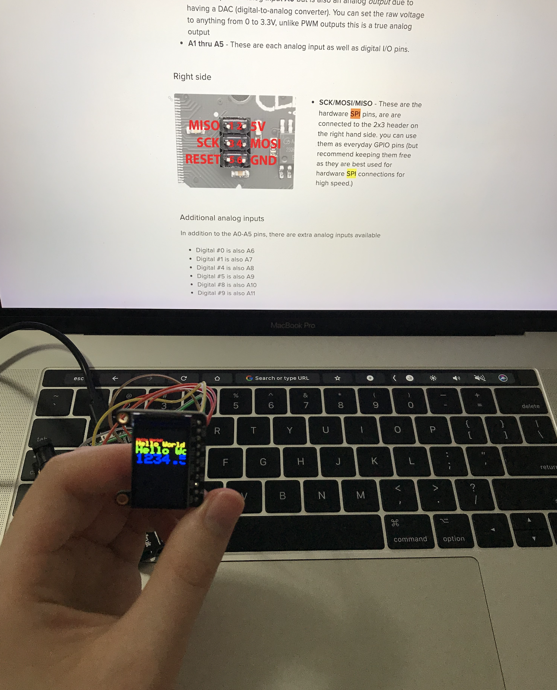

This week, we focused on communication between a microcontroller and another device over Bluetooth or WiFi connection.
After working with the Wifi and Bluetooth examples from class/lab, I decided that since Firebase
controlled devices offered me more flexibility that using a Bluetooth app to read/write to my device,
I would try to build something custom with this functionality and utility a new output device.
The buttons inspired me to imagine a scoreboard, where input came through clicks on a webpage and would be
shown on the TFT display, a device I hadn't used before. The wiring of the MOSI, MISO, etc. pins was new to me,
and I had to do some investigating into where exactly those pins were on my boards, since the overlap wasn't exactly
the same as on the visual from the tutorial. However, after some trial and error, I eventually got the tests displays
to work on the TFT.

From there, I followed the class Firebase tutorial, and got the keys I needed to get the below Arduino code to work.
Using the example text display functions already written, I modified them to display two players' scores with updates, starting
both scores at 0 upon initialization.
#include // Core graphics library
#include // Hardware-specific library for ST7735
#include // Hardware-specific library for ST7789
#include
#if defined(ARDUINO_FEATHER_ESP32) // Feather Huzzah32
#define TFT_CS 14
#define TFT_RST 15
#define TFT_DC 32
#elif defined(ESP8266)
#define TFT_CS 4
#define TFT_RST 16
#define TFT_DC 5
#else
// For the breakout board, you can use any 2 or 3 pins.
// These pins will also work for the 1.8" TFT shield.
#define TFT_CS 10
#define TFT_RST 9 // Or set to -1 and connect to Arduino RESET pin
#define TFT_DC 8
#endif
#include // esp32 library
#include // firebase library
#define FIREBASE_HOST "redacted" // the project name address from firebase id
#define FIREBASE_AUTH "redacted" // the secret key generated from firebase
#define WIFI_SSID "redacted" // input your home or public wifi name
#define WIFI_PASSWORD "redacted" // password of wifi ssid
String fireString = ""; // led status received from firebase
int ledpin = 5;
//Define FirebaseESP32 data object
FirebaseData firebaseData;
// For 1.14", 1.3", 1.54", and 2.0" TFT with ST7789:
Adafruit_ST7789 tft = Adafruit_ST7789(TFT_CS, TFT_DC, TFT_RST);
int p1 = 0;
int p2 = 0;
float p = 3.1415926;
void setup(void) {
Serial.begin(9600);
Serial.print(F("Hello! ST77xx TFT Test"));
// OR use this initializer (uncomment) if using a 1.14" 240x135 TFT:
tft.init(135, 240); // Init ST7789 240x135
Serial.println(F("Initialized"));
uint16_t time = millis();
tft.fillScreen(ST77XX_BLACK);
time = millis() - time;
Serial.println(time, DEC);
delay(500);
WiFi.begin(WIFI_SSID, WIFI_PASSWORD); // try to connect with wifi
Serial.print("Connecting to ");
Serial.print(WIFI_SSID);
while (WiFi.status() != WL_CONNECTED) {
Serial.print(".");
delay(500);
}
Serial.println();
Serial.print("Connected to ");
Serial.println(WIFI_SSID);
Serial.print("IP Address is : ");
Serial.println(WiFi.localIP()); // print local IP address
Firebase.begin(FIREBASE_HOST, FIREBASE_AUTH); // connect to firebase
Firebase.reconnectWiFi(true);
Firebase.set(firebaseData, "/P1_SCORE", 0); // set initial string of "OFF"
Firebase.set(firebaseData, "/P2_SCORE", 0); // set initial string of "OFF"
}
void loop() {
Firebase.get(firebaseData, "/P1_SCORE"); // get led status input from firebase
p1 = firebaseData.intData(); // change to e.g. intData() or boolData()
Serial.print("P1: ");
Serial.println(p1);
Firebase.get(firebaseData, "/P2_SCORE"); // get led status input from firebase
p2 = firebaseData.intData(); // change to e.g. intData() or boolData()
Serial.print("P2: ");
Serial.println(p2);
// tft print function!
tftPrintTest(p1, p2);
Serial.println("done");
delay(100);
}
void tftPrintTest(int x1, int x2) {
tft.setTextWrap(false);
tft.fillScreen(ST77XX_BLACK);
tft.setCursor(0, 30);
tft.setTextColor(ST77XX_YELLOW);
tft.setTextSize(4);
tft.print("P1: ");
tft.println(x1);
tft.setTextColor(ST77XX_RED);
tft.setTextSize(3);
tft.println("VS.");
tft.setTextColor(ST77XX_GREEN);
tft.setTextSize(4);
tft.print("P2: ");
tft.println(x2);
}
From there, I created a web app for my Firebase configuration to be able to interact with it via a browser. I had to add a line
to the imports to allow my database to be properly recognized, as per
this Reddit post.
I encountered some interesting issues upon attempting to do a simple increment of database values.
The simple tutorials on
Firebase's website
didn't quite work since, as far as I understand, the code was written for asynchronous databases and involves
"promises.""
What would essentially happen is if, for example, I called "value" and set a function to trigger on value was that it would keep updating, finding a value, etc.
until it blew through the limit on calling the function. Something similar would happen with "get", which should have been closer to single access.
I finally got "transaction" to work based on the following
Stackoverflow post.
However, I was still having issues getting other functionality to execute after the transaction, such as conditions to check for a stopping point and
declaring a winner/resetting the score. This functionality was important to me because otherwise, if numbers got big enough,
they would overflow my display. So I opted for a simple "Reset" button, with some code reuse. I assume with better handling of transaction, which I didn't
have time to finish exploring, I could make this code more modular.
Here is the final demo: